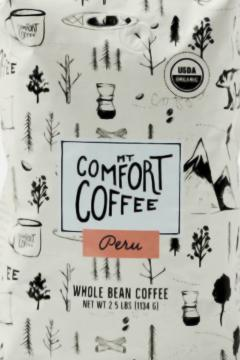
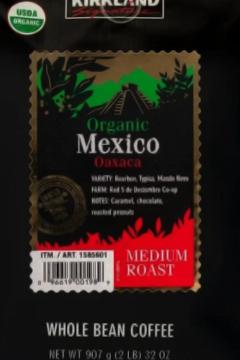
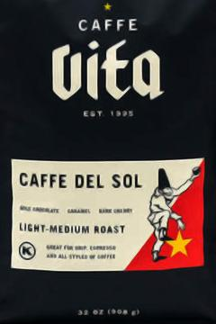
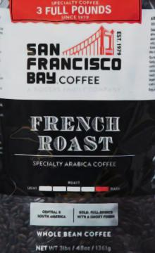

Notes on Coffee Beans at Costco
General Advice
I’m not an expert, but some themes emerge from expert opinions:
- Freshness matters a lot
- Grind your own beans–it takes only a moment and it’s fresher
- When the vendor says “blend” it really means “random, whatever’s cheapest”
- It’s generally better if they give source details
- “Dark roast” is over-rated, but vendors like it because consistent
Provisos
This document is mostly meant to boost my own memory, but maybe helpful to somebody else, though there’s no guarantee we would agree on taste.
I don’t like dark roasted coffee, so haven’t tried many of them.
Sorted List
In order of most favorite to least favorite.
Organic Mt Comfort Peru Coffee Whole Bean
Picture of bag
- Unfortunately no longer available at costco.
- Available on Amazon but pricy.
- Works well hot and cold.
- Taste: “chocolatey, nutty.”
Kirkland Signature Organic Mexico Oaxaca Medium Roast
Picture of bag
- Flavor is more centered than Caffe Vita.
- It’s a bit expensive.
- Taste: “caramel, chocolate, roasted peanuts.”
Caffe Vita Coffee Caffe Del Sol Blend Whole Bean, Medium Roast
Picture of bag
- It has a pretty strong taste, like some kind of root, better hot than cold.
- Caffe Vita is apparently a coffee roaster based in Seattle.
- “mix of Ethiopia, Indonesia, and South American coffees.”
- Taste: “milk chocolate caramel and dark cherry.”
San Francisco Bay French Roast
Picture of bag
- Dark roast–very much so.
- It was on sale. Never again.
- If you have to use it, use it for cold brew.
- Taste: “full bodied with a smokey finish”… actually like ashes.